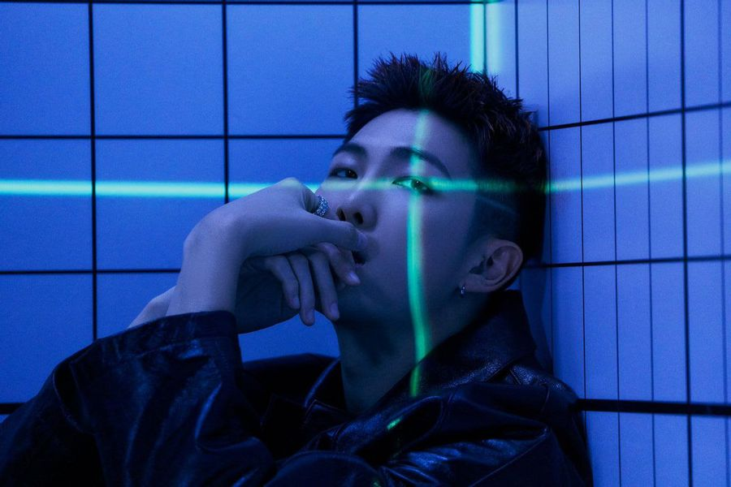

Stage Name: RM (아르엠), formerly Rap Monster
(랩몬스터)
Birth Name: Kim Nam Joon (김남준)
Position: Leader, Main Rapper
Birthday: September 12, 1994
Zodiac Sign: Virgo
Height: 181 cm (5’11”)
Weight: 76 kg (167 lbs)
Blood Type: A
MBTI Type: ENTP (his previous results were ENFP and
INFP)
Representative Emoji:

RM’s Spotify List: RM’s Favorite Tracks
Instagram: @rkive
KIM NAMJOON (RM)
RM
Facts:
– He was born in Seoul (Sangdo-dong) then he moved to Ilsan, Gyeonggi-do, South Korea when he
was 4.
– He has a younger sister, Kim Kyung Min.
– Education: Apgujeong High School; Global Cyber University – Electronic engineering major
(bachelor)
– In 2006 RM studied languages in New Zealand for 4 months. (Bon Voyage 4 – Ep 1)
– His favorite foods are meat (especially Samgyeopsal) and Kalguksu (Korean knife
noodles).
– He taught himself how to speak English and can speak it extremely well.
– BTS has been around since 2010, but they debuted in 2013 because of the constant member change
up. RM is the only member left from the original line up.
– Despite his rough and tough image, he is very playful and relaxed.
– Hobbies: Surfing the web.
– His favorite colors are black, pink, and purple. (BTS interview for J-14 Magazine from
170505)
– His favorite number is 1.
– His favorite items are clothes, computer, books.
– He likes clear weather.
– His role models are Kanye West, and A$AP Rocky.
– He is a big advocated for lgbtqia+ rights.
– RM thinks silver hair suits him the best. (Buzz Feed Interview 2018)
– He has co-composed/co-produced 160+ songs.
– He released his first solo mixtape, “RM” on March 17, 2015.
– On November 13 2017, Namjoon wrote a message on the group’s official fan cafe announcing he
changed his stage name from Rap Monster to RM. Namjoon stated that “RM” stands for “Real
Me”.
– RM is ranked 79th on TC Candler “The 100 Most Handsome Faces of 2018”.
– RM’s ideal type: “sexy, even to a brain. Someone that is thoughtful and
confident”
Show more RM fun facts + members’ opinion about
him

Stage Name: Jin (진)
Birth Name: Kim Seok Jin (김석진)
Position: Sub Vocalist, Visual
Birthday: December 4, 1992
Zodiac Sign: Sagittarius
Height: 179 cm (5’10.4″)
Weight: 61 kg (134 lbs)
Blood Type: O
MBTI Type: INTP
Representative Emoji:


Jin’s Spotify List: Jin’s Favorite Tracks
Instagram: @jin
KIM SEOKJIN (Jin)
Jin Facts:
– He was born in Anyang, Gyeonggi-do, but when he was about 1 year old his family moved to
Gwacheon, Gyeonggi-do
– He has an older brother, Kim Seok Joong, 2 years older than him.
– Education: Konkuk University; Hanyang Cyber University – Films major (masters/graduate)
– He is the oldest member.
– His favorite number is 4.
– His favorite weather is Spring sunlight.
– Hobbies: Cooking, playing videogames on Nintendo devices, taking selcas.
– His role model is T.O.P from BIGBANG.
– He blinks his left eye when he is hungry.
– Jin’s favorite color is blue. (According to BTS interview for J-14 Magazine from 170505). His
favorite color used to be pink.
– He also likes Disney princesses.
– He is a very good cook.
– He enjoys looking at photos and recipes.
– His favorite foods are lobster, meat, and naengmyeon (Korean cold noodles).
– According to the other members, he has the best body in Bangtan.
– Jin thinks pink hair suits him the best. (Buzz Feed Interview 2018)
– Jin was ranked 44th on TC Candler “The 100 Most Handsome Faces of 2019”.
– Jin’s ideal type is a girl whose looks and personality is similar to that of
a puppy, who’s good at cooking, kind and takes good care of him.
Show more Jin fun facts + members’ opinion about
him
Stage Name: Suga (슈가)
Full Name: Min Yoon Gi (민윤기)
Position: Lead Rapper
Birthday: March 9, 1993
Zodiac Sign: Pisces
Height: 174 cm (5’8.5″)
Weight: 63 kg (138 lbs)
Blood Type: O
MBTI Type: ISTP (His previous results were INFP->INTP)
Representative Emoji:

Suga’s Spotify List: Suga’s Favorite Tracks
Instagram: @agustd
Min YoonGi (Suga)
Suga Facts:
– He was born in Buk-gu, Daegu, South Korea.
– He has an older brother, Min Geumjae (born Min Junki).
– Education: Global Cyber University – Liberal Arts Major (bachelor)
– He speaks with a satoori accent when he’s nervous and when he cries.
– Hobbies: Doing nothing when he has free time, taking photos, avoiding having to do work.
– His favorite food is meat.
– He is called Motionless Min because on his days off he doesn’t do anything.
– His favorite color is white.
– His favorite number is 3
– Suga loves taking photos.
– His favorite weather is where you can wear short sleeves at day and long sleeves at night.
– He likes to make rhymes for everyday situations/gags.
– His role models are Kanye West, Lupe Fiasco, Lil
Wayne, and Hit Boy.
– Suga has co-composed/co-produced 120+ songs.
– Suga uses the alias Agust D for his solo works. (“DT”, short for his birth place “Daegu Town”,
and “Suga”, spelled backwards)
– Suga is ranked 67th on TC Candler “The 100 Most Handsome Faces of 2018”.
– Suga’s ideal type is someone who likes music, especially hip-hop. He says he
doesn’t really care about looks.
Show more Suga fun facts + members’ opinion about
him
Stage Name: J-Hope (제이홉)
Full Name: Jung Ho Seok (정호석)
Position: Main Dancer, Sub Rapper, Sub Vocalist
Birthday: February 18, 1994
Zodiac Sign: Aquarius
Height: 177 cm (5’10”)
Weight: 65 kg (143 lbs)
Blood Type: A
MBTI Type: INFJ (His previous result was ESFJ)
Representative Emoji:

 J-Hope’s Spotify List: J-Hope’s Favorite Tracks
J-Hope’s Spotify List: J-Hope’s Favorite TracksInstagram: @uarmyhope
Jung HoSeok (J-hope)
J-Hope Facts:
– He was born in Gwangju, South Korea.
– He has an older sister known as, Mejiwoo.
– His father is a high school literature teacher (teaching at Gwangju Global High School).
– Education: Gwangju Global High School; Global Cyber University
– Was the rapper in 2AM‘s JoKwon‘s “Animal“.
– Chose the name “J-Hope” as his stage name because he wants to be a source of light and hope to
his fans.
– He loves kimchi.
– His favorite season is Spring.
– Hobbies: Listening to music and window shopping.
– His favorite color is green. (because it’s the color of hope – Billboard interview)
– His favorite number is 7.
– He auditioned and won a popularity award at a JYP Entertainment competition.
– He is very clean.
– He hates exercising/working out.
– J-Hope and B.A.P Youngjae auditioned together for their JYP
audition.
– His role models are G-dragon of BIGBANG, A$AP
Rocky, J.Cole, and Beenzino.
– He thinks red hair suits him the best. (Buzz Feed Interview 2018)
– J-Hope has co-composed/co-produced 110+ songs.
– On March 2, 2018, J-Hope released his 1st mixtape “Hope World”, with the title track
“Daydream”.
– J-Hope is ranked 88th on TC Candler “The 100 Most Handsome Faces of 2018”.
– J-Hope’s ideal type is a girl who loves him, is good at cooking, and thinks a
lot.
Show more J-Hope fun
facts + members’ opinion about him
Stage Name: Jimin (지민)
Full Name: Park Ji Min (박지민)
Position: Main Dancer, Lead Vocalist
Birthday: October 13, 1995
Zodiac Sign: Libra
Height: 174 cm (5’8.5″)
Weight: 58.6 kg (129 lbs)
Blood Type: A
MBTI Type: ESTP (His previous result was ENFJ)
Representative Emoji:


Jimin’s Spotify List: Jimin’s Favorite Tracks
Instagram: @j.m
Park Jimin (Jimin)
Jimin Facts:
– He was born in Busan, South Korea.
– He has a younger brother, Park Jihyun.
– Education: Busan High School of Arts; Global Cyber University – Theatre and film major
(bachelor)
– Jimin was the last member to join BTS.
– Hobbies: Relaxing whenever he gets a chance.
– His favorite number is number 3
– His favorite colors are blue and black.
– His favorite foods are pork, duck, chicken, fruit, and kimchi jjigae.
– Jimin doesn’t like spinach (Run BTS ep. 65)
– He prefers a sunny and cool weather.
– Is known for his impressive abs.
– He jokingly hits his fellow members as a way of showing his affection for them
– If music is playing he will start to dance no matter where he is.
– His role model is TaeYang of BIGBANG.
– Jimin was ranked 19th on TC Candler “The 100 Most Handsome Faces of 2019”.
– Jimin’s ideal type is a nice and cute girl who is smaller than
him.
Show more Jimin fun
facts + members’ opinion about him
Stage Name: V (뷔)
Full Name: Kim Tae Hyung (김태형)
Position: Lead Dancer, Sub Vocalist, Visual
Birthday: December 30, 1995
Zodiac Sign: Capricorn
Height: 179 cm (5’10.4″)
Weight: 64 kg (141 lbs)
Blood Type: AB
MBTI Type: INFP-T (His previous result was ENFP)
Representative Emoji:


V’s Spotify List: V’s Favorite Tracks
Instagram: @thv
Kim Taehyung (V)
V Facts:
– He was born in Daegu, but later moved to Geochang where he spent his life until he moved to
Seoul.
– He has a younger sister (Kim Eun Jin) and a younger brother (Kim Jong
Gyu).
– Education: Korea Art School; Global Cyber University
– It is said that when his teaser image was released 5 personal fan clubs were created.
– He has been in the group for awhile, but fans didn’t know of hear of him until the time around
his debut.
– He likes anything that is unique.
– V’s favorite foods are Japchae and any type of meat.
– Hobbies: Searching for music that no one listens to, going on the computer.
– His favorite number is 10.
– His favorite color is grey. (According to BTS interview for J-14 Magazine from 170505)
– They call him Blank Tae because of his blank expression.
– He has a habit of biting his nails and sticking out his tongue.
– His role model is his dad.
– V favorite items are computer, big dolls, clothes, shoes, accessories, and anything
unique.
– Members say he is a horrible cook.
– He acted in the Korean drama “Hwarang” (2016-2017).
– V ranked 1st in the “Top 100 Most Handsome Faces of 2017“.
– V thinks red hair suits him the best. (Buzz Feed Interview 2018)
– V’s ideal type is someone who takes care of him and loves only him and who
has a lot of aegyo.
Show
more V fun facts + members’ opinion about
him
Stage Name: Jungkook (정국)
Full Name: Jeon Jung Kook (전정국)
Position: Main Vocalist, Lead Dancer, Sub Rapper, Center, Maknae
Birthday: September 1, 1997
Zodiac Sign: Virgo
Height: 179 cm (5’10”)
Weight: 71 kg (156 lbs)
Blood Type: A
MBTI Type: INTP-T (His previous result was ISFP-T)
Representative Emoji:

Jungkook’s Spotify List: Jungkook’s Favorite Tracks
Instagram: @jungkook.97
Jeon Jungkook (JK)
Jungkook Facts:
– He was born in Busan, South Korea.
– He has an older brother, Jeon Junghyun.
– Education: Seoul School of Performing Arts; Global Cyber University
– Before joining the group he was a handball player.
– Hobbies: Drawing.
– GOT7‘s Bambam & Yugyeom, BTS‘s Jungkook,
Seventeen‘s The8, Mingyu, DK, NCT‘s Jaehyun and Astro‘s Cha Eunwoo (the ’97 liners) are in a group chat.
– His favorite foods are anything with flour (pizza, bread, etc)
– He likes the number 1
– His favorite color is black. (Run BTS Ep. 39)
– Jungkook thinks black hair color suits him the best. (Buzz Feed Interview 2018)
– Said to be a very skilled cook.
– He likes shoes and makeup.
– Jungkook is ranked 1st on TC Candler “The 100 Most Handsome Faces of 2019”.
– His role model is G-Dragon of BIGBANG.
– Jungkook’s ideal type is someone who’s at least 168 cm but smaller than him,
is a good wife, good at cooking, smart, has pretty legs, and is nice. Also a girl who likes him
and is good at singing.
Show more
Jungkook fun facts + members’ opinion about him
Jungkook’s Tattoos
& Meanings